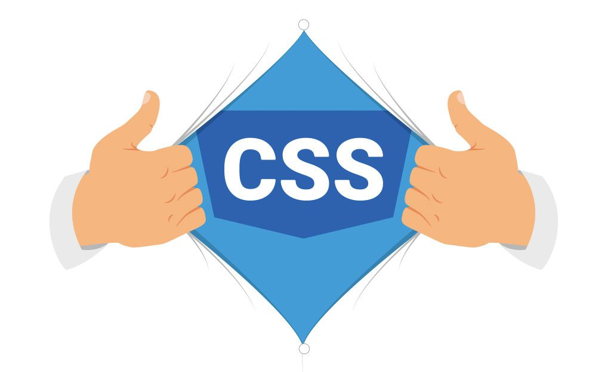

Conceptos base del desarrollo web:
Los conceptos base del desarrollo web son aquellos tecnisismmos utilizados para referirse a los aspectos fundamentales en la creacion de websites y todo aquello que se tiene que saber para comprender este proceso. Aqui se encuentran los principales:

Frontend vs Backend
El frontend es la parte del sitio web vista y usada por el usuario, mientras que el backend es todo el codigo usado para crear el sitio web y sus procesos.
Más Info.End-Users
Es la persona o cliente que usara el producto, para quien esta diseñado. No es necesariamente quien pide el producto, sino el usuario para el cual se pide.
Más Info.
El cliente
Un cliente web es aquella herramienta usada por el usuario para acceder al sitio. Normalmente se refiere al navegador web del usuario o su propia computadora.
Más Info.Las CDNs
Las Content Delivery Networks son redes de servidores encargadas de distribuir contenido estatico a clientes en diferentes aprtes del mundo, aumentando la velocidad.
Más Info.
Historia de html:

El HyperText Markup Language, inicio como una forma de compartir informacion entre sitios web usando solo texto. Con el tiempo, se agregaron tags de imagenes y en 1997 por primera vez se agregaron diseños con fondo, colores y fuentes. Actualmente HTML es la base sobre la cual estan hechos la mayoria de los sitios web.
Historia de CSS:
